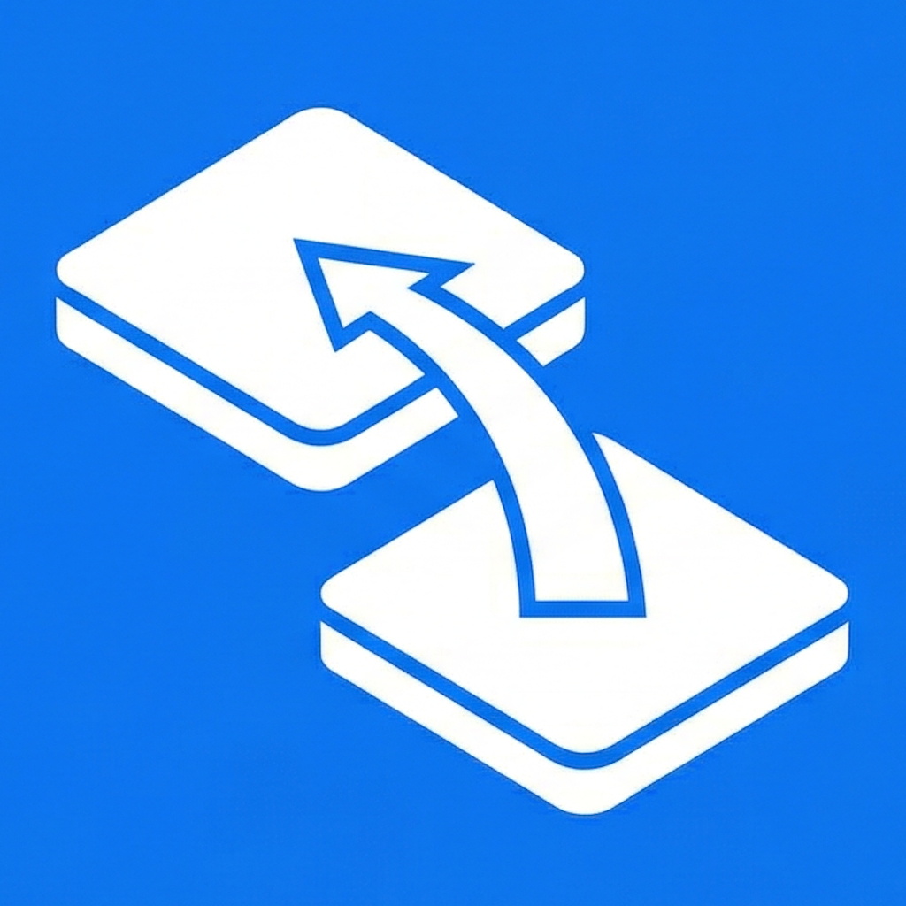
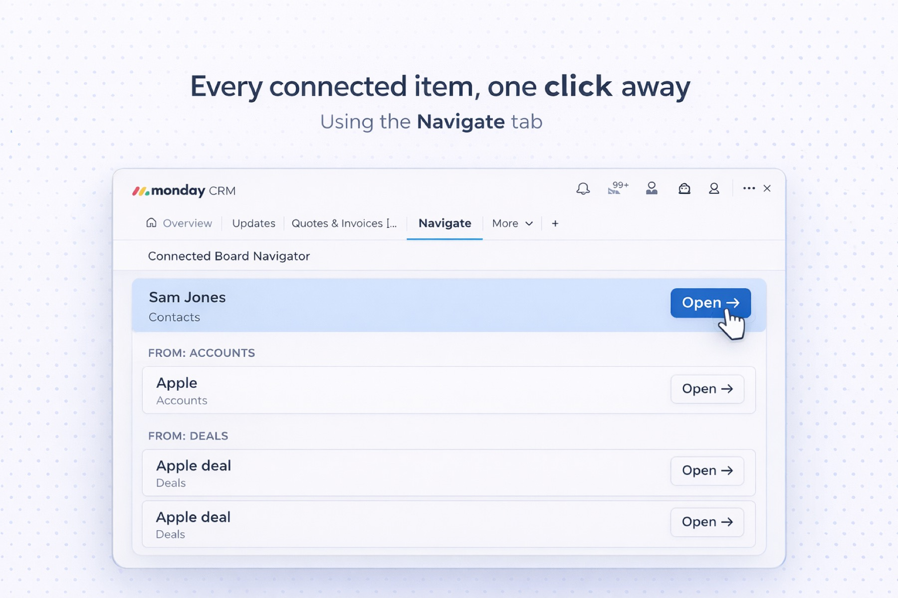
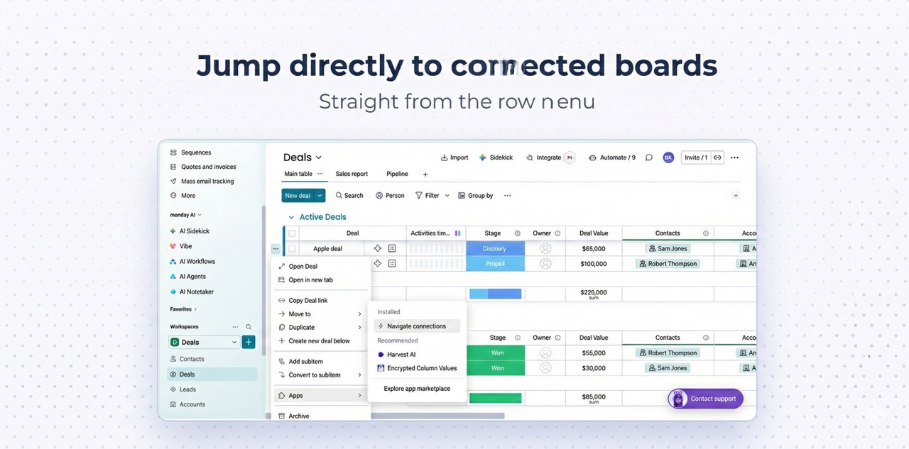

Apps for monday.com built to boost efficiency and make your day-to-day easier.
Designed to help teams move faster and get more out of monday.com. Each app adds focused capabilities to your existing workflows — so you spend less time switching context and more time getting things done.
Apps

Navigate connected items directly — no searching, no workarounds.
Finding a connected item on its original board can be tricky. Connected Board Navigator adds a Navigate tab to every item view and a shortcut to the row action menu — so you can jump to any connected board in one click, without searching.

